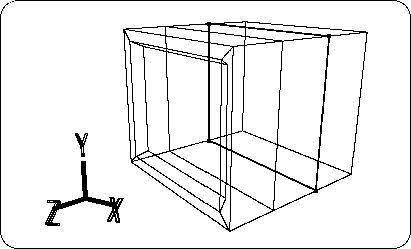
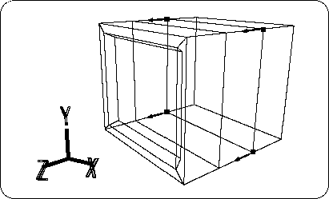
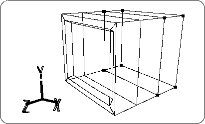
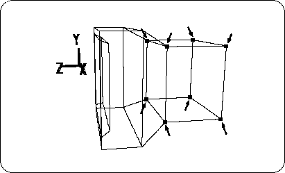
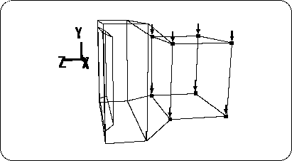
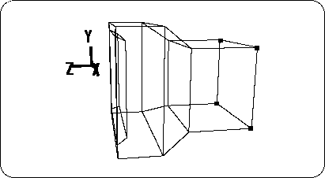
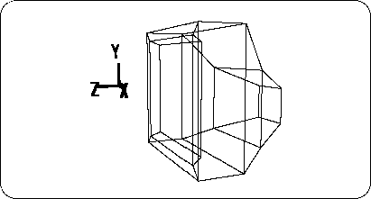
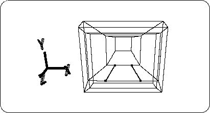

Return to previous page | Return to menu | Go to next page
[Edit] → [Coordinate]
Click on the TAG you want to check. Since the X, Y, and Z positions are displayed, make sure that the Z position is about 0.1 (you can also enter numerical values here).
When you have finished moving TAGs, cancel all TAG selections and add 4 new edges as shown in the figure for the edge midpoint division and edge creation (Figure 2-26).

Next, attach a TAG to the point in the figure and move it in the + Z direction (Figure 2-27).
[Edit] → [Coordinate]
Then, check the Z coordinate value of the moved TAG and make it to be about -0.01.

Select the new 4 tags without changing the TAG selected earlier (Figure 2-28).

[ScaleX, Y, Z] (select the whole) + left mouse button, middle button drags and drags the part enclosed by the selected TAG in the X and Y directions (Figure 2-29).

Move the selected back part downward (-Y)
Select [TransY] and drag it with the mouse to move the selected part slightly in the -Y direction (Figure 2-30).

Next, transform the back part.
Deselect TAG as shown (Figure 2-31).

[ScaleX, Y, Z] (select all) + left mouse button, middle button , dragging and dragging the surface surrounded by the TAG is reduced in the X and Y directions ,
Use [TransY] to move the selected surface in the -Y direction and [TransZ] in the -Z direction. The result looks like the figure (Figure 2-32).

Next, create the pedestal for the TV monitor.
Add two edges as shown in the figure for the midpoint division and edge creation (Figure 2-33).
